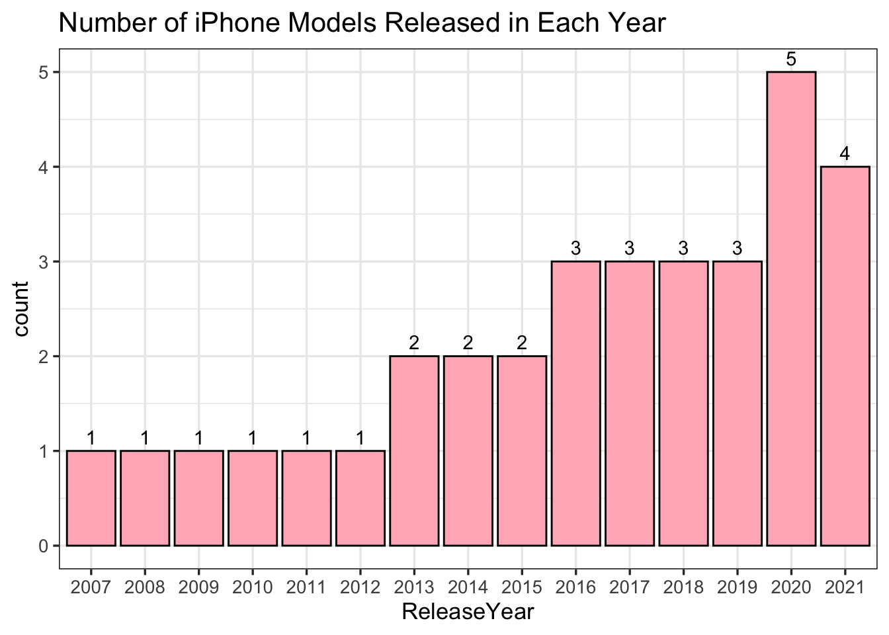

Chapter 5 Results
5.1 Different iPhone Features Changing
In order for us to better understand how products are changing to suit the public’s varying needs, it is necessary to examine the change of products’ features over the year. As an iconic figure among all Apple products, iPhone can be a typical product for our analysis. In this section, we will take a deep analysis of the features of different generations of iPhone products, like the release date and discontinued date, display of the phone, and the rear camera mode. In our data cleaning section, we have obtained the data that contain that essential information, and we will utilize these data and a vast of R libraries including tidyverse, rvest, robotstxt, patchwork, naniar, janitor, and vistime to help our exploratory analysis.
5.1.1 Release and Discontinued Date
Before we dive into the various features of the iPhone, we want to present a roadmap of when each iPhone was produced and when it was discontinued from production. For our purpose, we utilize the vistime library to draw the visualization.
Vistime allows us to interact with the graph. If we point at the box where each iPhone is located, we can clearly see when the iPhone is produced and when it’s discontinued. As we can see from the graph, the earliest iPhone was produced in 2008, and it only lasts for one year. A similar fate can be seen on iPhone 3G or iPhone 5, where we can imply that Apple was facing certain challenges as they first started producing the iPhone product. As Apple continues on producing the iPhone products, we can see their production lasts longer than before, which may be caused by their more stabilized or newer technology. However, there is one thing we notice from the graph about the iPhone 4. Although it’s among one of the earliest iPhones, its production lasts comparatively longer than other early iPhones. This tells us that iPhone 4 symbolizes one of the early successes in Apply history. Also, starting from iPhone 4, Apple started producing iPhones more frequently and introducing more models.

As we can see from the bar graph of numbers of the iPhones released each year, we can see that Apple continues to release more and more iPhone models in the last 15 years. Apple reaches at most 5 models in 2020. In particular, the year 2013 can be seen as a growth point of iPhone models. Before 2013, Apple only released one model a year, but after 2013, Apple started releasing more than 2 models a year. This implies that Apple reached success in making iPhone models in 2013, and they were more confident to produce more various models in the following years. This result is consistent with what we get from the Vistime plot. As we said, iPhone 4 can be seen as one of the early successes in Apple history. And if we look back at the production period of the iPhone 4, which is 2010-2013, we can see that the success of the iPhone 4 perfectly matches the growth point of the iPhone models.
5.1.2 iPhone Display Table
We found a dataset about the information of the display of each iPhone model. Given the dataset, we use a parallel coordinate plot to visualize the relationship among different iPhone features. Since the original dataset contains fairly detailed information about different features of iPhone models, for the sake of simplicity and clarity, we only selected a few important features that the most public care about when they select iPhones, including pixel density, aspect ratio, typical max brightness, contrast ratio, etc. To avoid the overlap of the feature names in the plot, we have abbreviated the feature names.
This interactive plot shows a wide range of changes in different features of iPhones, and we can select certain features and see which iPhone models have those features. From this plot, we can see that the iPhones produced in later years have more advanced and complete feature settings. For instance, from iPhone 11 to iPhone 13, they all have comparatively high pixel densities and aspect ratios. Some early iPhones like iPhone 6 and iPhone 7 lack a lot of features like ProMotion Display, True Tone Display, etc. Overall, the features in the graph have a positive correlation with each other. For example, iPhones with higher pixel densities also have higher aspect ratios. (If we have more time, we will modify and correct the order of the models in this plot.)
One of the most significant features of iPhone products has to be screen sizes. A larger screen size allows people to view more information at a time and handle more work on the phones. As iPhone starts to be used in more business tasks today, a larger screen size is heavily demanded by the public. In order to visualize this increasing demand, we graphed a scatter plot of screen sizes in different iPhone models. We set the x-axis in integer measures, which follows the order of the date when each model is released. Each point represents each iPhone model in the order of release time. The y axis is the measure of the screen size of each model. To show the trend of the scatter plot, we also included the best fitting lines that capture the trend of the overall change of screen sizes in different models.

As we can see from the scatter plot, the minimum size of the iPhone screen is 4 inches, and the maximum size of screen is about 6.7 inches. The best-fitting line is shown in a positive slope. Therefore, we can clearly see that Apple continues to develop larger screen sizes in the last couple of years. There are a few outliers in the graph, like the 17th model released with only about 4.7 inches of screen size, and the 3rd model released with the minimum screen size value 4. This may be caused by the increasing need for different customer groups, for example, some teenagers who prefer smaller screen sizes, and Apple develops the iPhones to satisfy the demand of those customers.
Besides the screen sizes, the dimensions of resolution are also important for the customers. A higher resolution provides a clearer view for iPhone users. In order to illustrate the change of iPhone resolution in different models, we provided a scatter plot of resolution X, meaning the horizontal resolution of visual data in iPhone, and resolution Y, meaning the vertical resolution in iPhone. We labeled the model types on each point in the scatter plot so that the reader can directly associate the resolutions to different iPhone models. We have also checked the overlap between points and only show one of them for better readability.

From the scatter plot, we can see that the points are arranged in positive scales, which means that newer iPhones generally have higher resolution. The minimum resolution X is about 1100 and the minimum resolution Y is about 750. The minimum resolution happens in the first generation of iPhone, iPhone SE. The maximum resolution X is around 2800, and the maximum resolution Y is around 1300. The maximum resolution occurs in iPhone 12 Pro Max, which was released last year. This result should be predictable, because Apple has gathered newer and more advanced technology as it produces more iPhone products, and a higher resolution or a clearer view is supported in the latest iPhone products for better user experience.
5.1.3 iPhone Rear Camera Table
One of the biggest reasons that many people choose to buy iPhone products has to do with the iPhone’s highly competitive and powerful camera. A lot of photography lovers have claimed that the iPhone’s camera resembles most of the features that a professional camera has. This kind of high compliment motivates us to discover the features behind the iPhone’s camera. We created a parallel coordinate plot to visualize selected important features and their relationship with each other. Similar to the parallel coordinate plot we created for the iPhone display, we only selected a few important features that most people are curious about because the original dataset contains very complex and professional information about camera settings, which will affect the clarity of our visualization. On the left-hand side of the plot, we can see a list of iPhone models, and on the upper side, we can see a list of camera features. We can interact with the axis of each camera feature to compare different pairs of them for our analysis and get information about their relationship.
As we can see from the graph, early iPhones like iPhone 6s to iPhone XS, which were produced more than three years ago, all have very basic camera settings. For instance, they don’t have night mode, or optical image stabilization. But iPhones that are produced recently like iPhone 11 to iPhone 13 have more advanced features. For example, these most recent iPhones can produce different kinds of photos in 12 megapixels, which allows consumers to take photos in various ways and in clearer views. There are no clear outliers in the plot. Overall, all the features are shown in positive correlation. For example, iPhones that are 12 megapixels wide and support 12 megapixels of telephotos also support wide and sensor-shift optical image stabilization. (If we have more time, we will modify and correct the order of the models in this plot.)
5.2 Apple Fianance Data Analysis
Through our examination of the iPhone products in the previous section, we can notice that Apple has gained a lot of success in producing iPhones in the last decade. Furthermore, according to the note in Wikipedia, on August 2, 2018, Apple became the first publicly traded U.S. company to reach a $1 trillion market value. Also, Apple was ranked No. 4 on the 2018 Fortune 500 rankings of the largest United States corporations by total revenue. Then we started thinking about how much profit that Apple has gained during these years? What does Apple’s financial circumstances exactly look like? In this section, we will focus on the financial circumstances of Apple by looking at a dataset from Wikipedia including Apple’s revenue, net income, total assets and number of employees from 2000 to 2020.
Below is a line graph showing the three different finance data we have for Apple from 2000 to 2020.
As we can see from the graph, revenue, net income, and total assets all stay increasing during the years. Since these variables all have the same measuring scale, we can compare their growing trend by looking at the growth rate of the lines. As we can see, total assets is the one that changes most significantly among the three variables. It started growing very smoothly during 2000 to 2010, but then suddenly grew much faster than before in the later years. Different from total assets, the net income stays its smooth growth from 2000 to 2020. Revenue has a similar growth trend as total asset, and it also turns to a faster increasing rate after 2010, but it doesn’t have the same high growth rate as the total asset.
When we mention the financial circumstances of a company, many people will think of the company’s profit, total assets and revenue, but neglect the importance of the employees in the company. The number of employees can not only inform us of the company’s capabilities of supporting workers, but it can also show us the influence of a company which attracts a vast number of people to work for it. In order to illustrate the trend of employee numbers from 2000 to 2020, we created a bar plot that shows the number of employees in Apple each year. The x axis indicates the year that number of employees is counted, and the y axis represents the number of employees.

From the bar plot, we can see that the number of employees shows a continuous increasing trend. The minimum number of employees is around 15000, and the maximum number of employees is around 150000. Notice that there are five years having 0 Employees, which are 2000 to 2004. For these years, the original dataset doesn’t record any value for the employee numbers, and they are shown as NAs in the table. For our visualization purpose, we changed the NAs values to 0. But what can cause the missing of these values? Possibly, during 2000-2004, Apple only had a handful of employees in their company, and the number of Employees is not very important to them because it doesn’t have a significant influence on Apple’s financial circumstances. Or possibly, Apple doesn’t have a mature system to count all the employees in the early years. Detailed analysis about the missing value on the Employees column has been introduced in the Missing Values chapter. Besides the missing value, another thing we discover from the plot is that the slope of increase from 2005-2015 is larger than the slope of increase from 2015 to 2020. It means that Apple has started to slow down their employment in recent years. Several reasons can cause this change. For example, Apple starts to pay more attention to the quality of employees instead of the quantity, or it may also suggest that the recent financial circumstances no longer allow Apple to employ as many employees as before.
We now know what the growing number of employees looks like from the previous graph, but it will also be interesting to discover the relationship between the number of employees and the other financial data (revenue, net income and total asset). Since we have found that the three financial data follow a similar growth trend in our line graph, we only need to select one of them to compare with the number of employees because the resulting graph will look very similar if we plot all of them. Below is a scatter plot of the number of employees and the revenue from 2000 to 2020. We place the revenue variable on the x axis, and the number of employees on the y axis.
As we can see from the graph, the scatter plot clearly shows a positive linear relationship between the number of employees and the revenue. It means that as revenue increases, the number of employees also increases. We also find out that the first few points in the graph are more close to each other, but the last few points are spreaded very sparsely. It suggests that the relationship between the two variables is very similar in the previous years, and the changes are very small, but then revenue starts to increase very quickly in the later years, and there exists a larger gap between the two. This conclusion can also be seen in our line graph by comparing the gaps between the lines of employees and revenues.
5.3 Customer Satisfaction
Over the years, Apple continued to make changes to their products to meet or even exceed customer expectations. Their great success is closely related to customers’ preferences. To more deeply understand how U.S. customers are satisfied with iPhones, we find a dataset of Smartphone Customer Satisfaction 2021 from ACSI(American Customer Satisfaction Index). This table includes smartphones from different companies. This index is calculated based on various aspects, including ease of text messaging, phone design, audio quality, phone features, video quality, and so forth.
Below is a Cleveland Dot Plot of the customer satisfaction score of different brands of phones.

In this Cleveland dot plot, we order these smartphone models by satisfaction index, which scales from 0-100. The first five models with highest satisfaction are from Samsung. They all have a satisfaction index from 82.5 to 85. Most iPhone models have a satisfaction index from about 79 to 82. These models are all the latest iPhones with the newest changes in various features. One interesting discovery we found is that the iPhone 11, which was released more recently than iPhone X, has a lower customer satisfaction index than iPhoneX. The reason that iPhone 11 has a lower score may be caused by the fact that iPhone 11 doesn’t show much improvement from the last model, and it might disappoint some customers. Some people might think iPhone 11 does not worth extra money so they stick with iPhone X. Despite this discovery, most people still give iPhone products a high customer satisfaction index, so we can safely conclude that customers are satisfied with the changes that Apple has made to iPhone these years. We can also infer that Samsung is also making changes to their models’ features and meeting more customers’ needs.
After we glanced through the customer satisfaction table, we found that there are only two manufacturers, Apple and Samsung, whose models have a satisfaction index above 75. These two companies dominate the high score ranges of customer satisfaction, thus, we can conclude that they are the two most popular phone companies in the U.S. in 2021. Based on this common view, we want to make a comparison of the number of models each company produces.
We created a bar plot to show this comparison.

As we can see from the graph, among all 24 models that receive the highest customer satisfaction scores, 13 are from Apple and 11 are from Samsung. Although Apple has two more models than Samsung, the difference is not significant, and we cannot draw a definite conclusion on which company performs better than the other just from this graph. But at least we know that both companies are making an effort on producing more various and advanced phones for their customers. This is also the reason why these two companies can dominate the phone market.